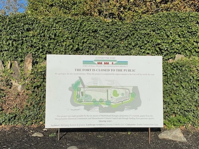
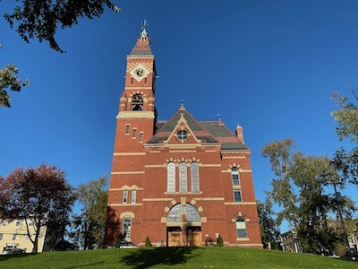

Historical Marblehead

Fort Sewall

Abbot Hall
About Fort Sewall
Fort Sewall sits at the point of Marblehead, across the harbor from the lighthouse. Fort Sewall was built in 1644 and continuously modified through the 1800s. The fort is famous for defending against the French and British in various wars, even protecting the legendary USS Constitution. For more information head to the Essex heritage website linked below.
About Abbot Hall
Abbot Hall is the center of history for Marblehead. Here lies artwork and historical figures from some of the most influential times in US history. Marblehead played a huge role in defending American waters during some of the most essential battles for our country. For more information head to the official website linked below.